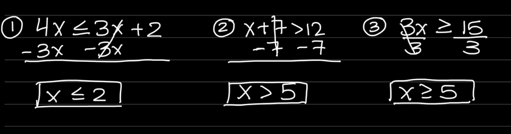
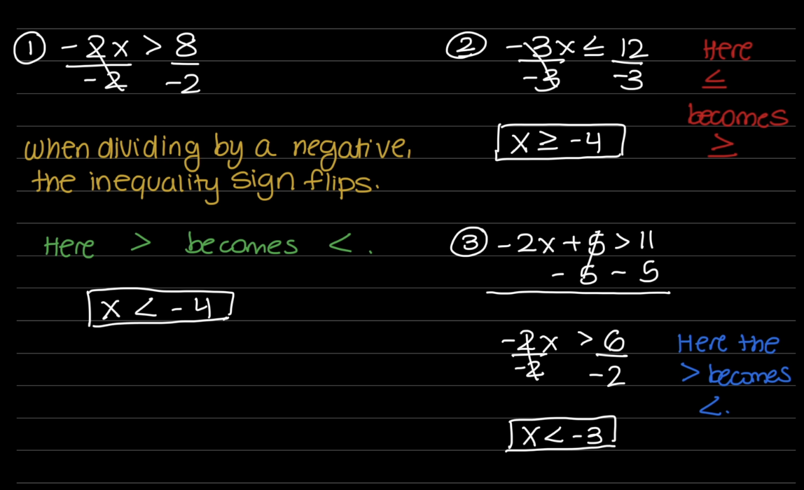
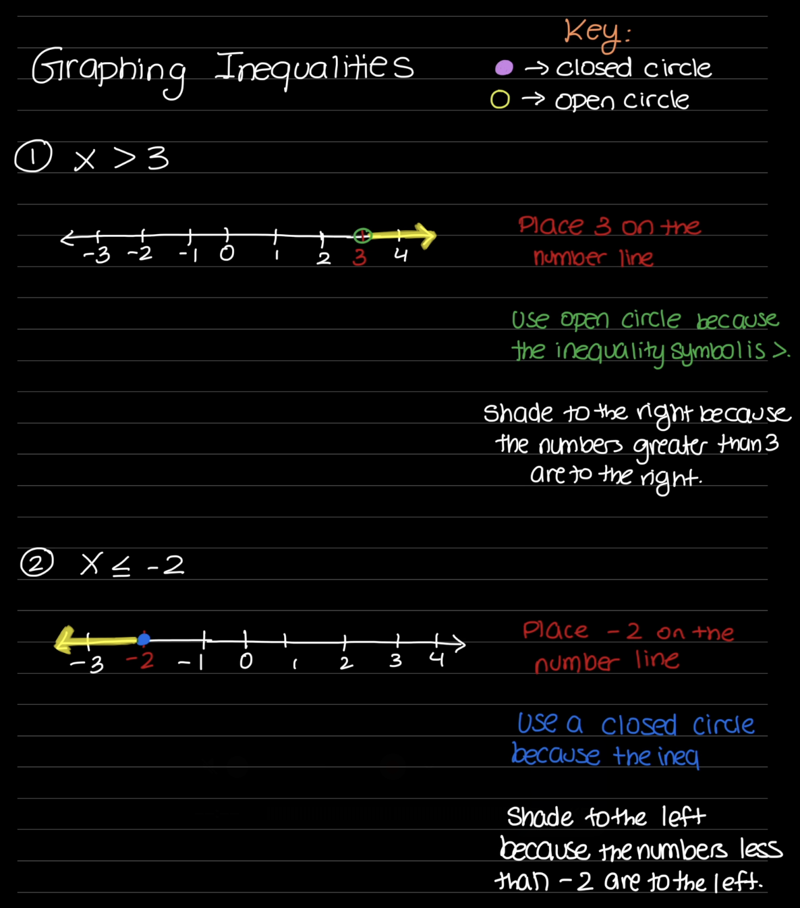

Inequalities
What is an inequality?
An inequality is a math sentence that compares two values or expressions using an inequality symbol.
Inequality Symbols
There are 4 inequality symbols.
| Symbol |
What it means |
| > |
Greater than |
| < |
Less than |
| ≥ |
Greater than or equal to |
| ≤ |
Less than or equal to |
How To Solve Inequalities
The steps to solve inequalities are very similar to solving equations. The main difference is the inequality symbols.
Steps:
- Simplify both sides of the inequality. Combine like terms if necessary.
- Use addition or subtraction to move constants and isolate the variable term.
- Use multiplication or division to isolate the variable.
- Write your solution with the correct inequality symbol.
- Check your answer by substituting a value into the original inequality.
Examples
Example 1: 4x ≤ 3x + 2
- Subtract 3x on both sides of the inequality. We now get 1x ≤ 2.
- Our goal is to get x by itself now. We divide by 1 on both sides.
- 2 ÷ 1 is 2.
Final Answer: x ≤ 2
Example 2: x + 7 > 12
- Subtract 7 from both sides of the inequality. We now get x > 5.
- Our variable is already by itself.
Final Answer: x > 5
Example 3: 3x ≥ 15
- Our goal is to get x by itself.
- Divide both sides by 3. We now get x ≥ 5.
- 15 ÷ 3 is 5.
Final Answer: x ≥ 5
Examples Visualization:

Dividing and Multiplying with Negatives
When solving an inequality, remember that if we multiply or divide both sides
by a negative number, we must reverse the inequality symbol.
Example 1: -2x > 8
- Our goal is to get x by itself.
- Divide both sides by -2.
- Because we are dividing by a negative number, we must reverse the inequality symbol.
- We now get x < - 4.
Final Answer: x < - 4
Example 2: -3x ≤ 12
- Our goal is to get x by itself.
- Divide both sides by -3.
- Because we are dividing by a negative number, we reverse the inequality symbol.
- 12 ÷ -3 is - 4.
- We now get x ≥ - 4.
Final Answer: x ≥ - 4
Example 3: -2x + 5 > 11
- Subtract 5 from both sides. We now get -2x > 6.
- Divide both sides by - 2.
- Because we are dividing by a negative number, we reverse the inequality symbol.
- 6 ÷ - 2 is - 3.
Final Answer: x < - 3
REMEMBER:
When multiplying or dividing both sides of an inequality by a negative number,
reverse the inequality symbol.
Examples Visualization:

Graphing Inequalities on a Number Line
Graphing an inequality on a number line helps us visualize all the
numbers that make the inequality true.
Steps for Graphing an Inequality
-
Solve the inequality.
Isolate the variable on one side of the inequality.
-
Find the boundary point.
The number that the variable is compared to is the boundary
point. Place it on the number line.
-
Choose an open or closed circle.
-
Use an open circle for
< or >.
-
Use a closed circle for
≤ or ≥.
-
Shade the correct direction.
-
Shade to the left for
< or ≤.
-
Shade to the right for
> or ≥.
Quick Reference
-
< → Open circle + shade left
-
> → Open circle + shade right
-
≤ → Closed circle + shade left
-
≥ → Closed circle + shade right
Example 1
Graph: x > 3
- Place 3 on the number line.
- Use an open circle because the inequality is >.
- Shade to the right because the numbers greater than 3 are to the right.
Solution: x > 3
Example 2
Graph: x ≤ -2
- Place -2 on the number line.
- Use a closed circle because the inequality is ≤.
- Shade to the left because the numbers less than or equal to -2 are to the left.
Solution: x ≤ -2
Remember: If you multiply or divide both sides of an
inequality by a negative number, you must reverse the inequality sign.
Visual Representation
For the 2 examples, take a look below at the graphs of how those 2 ineuqalities should be graphed:

Practice Problems
Solve each inequality. Write your answer using the correct inequality symbol.
- 2x + 5 > 13
- x - 7 ≤ 4
- 3x ≥ 18
- 4x - 2 < 14
- -2x > 10
- -3x + 4 ≤ 16